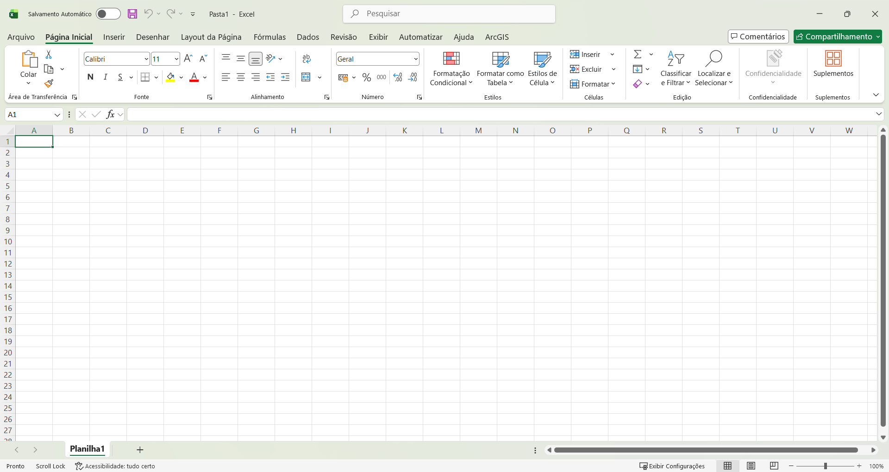
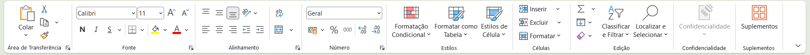
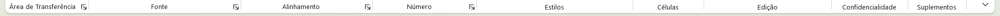
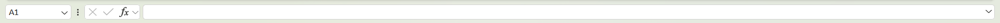
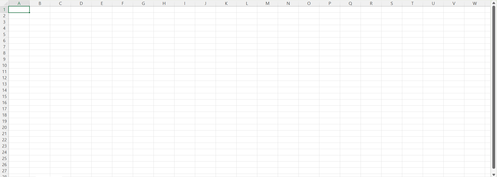
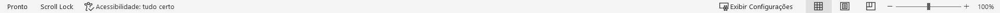

5. Conhecendo a Tela do Microsoft Excel
Você selecionou o Microsoft Excel Desktop. Antes de começarmos a digitar dados, precisamos entender como a tela do programa está organizada. Se você está olhando para ela pela primeira vez, a quantidade de botões pode assustar, mas todos eles seguem uma lógica de organização bem simples.
Veja abaixo a interface padrão do Excel assim que abrimos um arquivo novo:

A partir da imagem acima, vamos compreender a função de cada uma das suas partes principais:
-
Barra de Ferramentas de Acesso Rápido: Fica no topo esquerdo da janela. É um espaço reservado para botões que você usa a todo momento, como Salvar (Disquete), Desfazer e Refazer ações. Você pode personalizar essa barra para incluir seus comandos favoritos.
-
Guias de Menus: São as palavras localizadas logo abaixo do topo (Página Inicial, Inserir, Layout da Página, Fórmulas...). Cada palavra funciona como uma "aba" diferente. Quando você clica em uma guia, toda a barra de botões abaixo dela muda.
-
Faixa de Opções: É a grande faixa retangular horizontal que cruza o topo da tela. Ela abriga todas as ferramentas visuais do Excel e muda seu conteúdo dependendo da Guia de Menu que estiver selecionada.

-
Grupos: Dentro da Faixa de Opções, repare que os botões são separados por pequenas linhas verticais organizadas por assunto. Esses quadradinhos são chamados de Grupos (ex: dentro da guia Página Inicial, temos o grupo "Fonte" para organizar textos e o grupo "Alinhamento").

-
Barra de Fórmulas: É a linha branca horizontal comprida localizada logo acima da grade de células. Ela funciona como uma "janela de raio-X": quando você clica em uma célula, essa barra mostra o texto real ou a fórmula matemática que está escondida ali dentro.

-
Área de Trabalho da Planilha: É o corpo principal do programa. Uma imensa grade quadriculada formada pelo cruzamento de linhas e colunas onde nós de fato construímos nossas tabelas e inserimos nossos dados.

-
Guias de Planilhas: Ficam localizadas no canto inferior esquerdo, logo abaixo da área de trabalho da planilha. Elas mostram as páginas (abas) do seu arquivo. Um único arquivo de Excel pode ter várias planilhas separadas por ali (Planilha1, Planilha2, etc.).
-
Barra de Status: É a última faixa no rodapé do programa. Ela exibe informações úteis (como se o sistema está pronto ou calculando algo) e traz, no canto direito, o controle de Zoom para você aumentar ou diminuir o tamanho visual da grade.
